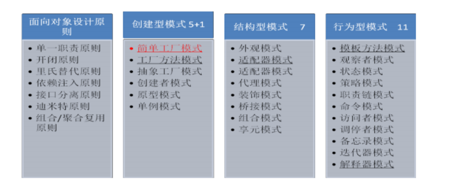

1. 什么是设计模式，设计模式的作用。
设计模式是一套被反复使用的、多数人知晓、经过分类编目的优秀代码设计经验的总结。特定环境下
特定问题的处理方法。
- 重用设计和代码 重用设计比重用代码更有意义，自动带来代码重用
- 提高扩展性 大量使用面向接口编程，预留扩展插槽，新的功能或特性很容易加入到系统中来
- 提高灵活性 通过组合提高灵活性，可允许代码修改平稳发生，对一处修改不会波及到其他模块
- 提高开发效率 正确使用设计模式，可以节省大量的时间
2. 面向对象设计原则有哪些
面向对象设计原则是面向对象设计的基石，面向对象设计质量的依据和保障，设计模式是面向对象设
计原则的经典应用
1) 单一职责原则 SRP
2) 开闭原则 OCP
3) 里氏替代原则 LSP
4) 依赖注入原则 DIP
5) 接口分离原则 ISP
6) 迪米特原则 LOD
7) 组合 /聚合复用原则 CARP
开闭原则具有理想主义的色彩，它是面向对象设计的终极目标。其他设计原则都可以看作是开闭
原则的实现手段或方法
3. 23 种经典设计模式都有哪些，如何分类。


4. 写出简单工厂模式的示例代码
public class SimpleFactory {
public static Product createProduct(String pname){
Product product= null ;
if ("p1".equals(pname)){
product = new Product1();
} else if ("p2".equals(pname)){
product = new Product2();
} else if ("pn".equals(pname)){
product = new ProductN();
}
return product;
}
}
基本原理：由一个工厂类根据传入的参数（一般是字符串参数），动态决定应该创建哪一个产
品子类（这些产品子类继承自同一个父类或接口）的实例，并以父类形式返回
优点：客户端不负责对象的创建，而是由专门的工厂类完成；客户端只负责对象的调用，实现了创建
和调用的分离，降低了客户端代码的难度；
缺点：如果增加和减少产品子类，需要修改简单工厂类，违背了开闭原则；如果产品子类过多，
会导致工厂类非常的庞大，违反了高内聚原则，不利于后期维护
5. 写出单例模式的示例代码
/**
* 饿汉式的单例模式
* 在类加载的时候创建单例实例，而不是等到第一次请求实例的时候的时候创建
* 1 、私有 的无参数构造方法 Singleton() ，避免外部创建实例
* 2 、私有静态属性 instance
* 3 、公有静态方法 getInstance()
*/
public class Singleton {
private static Singleton instance = new Singleton();
private Singleton(){ }
public static Singleton getInstance(){
return instance ;
}
}
/**
* 懒汉式的单例模式
* 在类加载的时候不创建单例实例，只有在第一次请求实例的时候的时候创建
*/
public class Singleton {
private static Singleton instance ;
private Singleton(){ }
/**
* 多线程情况的单例模式，避免创建多个对象
*/
public static Singleton getInstance(){
if ( instance == null ){// 避免每次加锁，只有第一次没有创建对象时才加锁
synchronized (Singleton. class ){// 加锁，只允许一个线程进入
if ( instance ==null ){ // 只创建一次对象
instance = new Singleton();
}
}
}
return instance ;
}
}
6. 请对你所熟悉的一个设计模式进行介绍
分析：建议挑选有一定技术难度，并且在实际开发中应用较多的设计模式。可以挑选装饰模式和动态
代理模式。此处挑选动态代理设计模式。
讲解思路：生活案例引入、技术讲解、优缺点分析、典型应用。
1、生活案例引入： 送生日蛋糕：
MM们要过生日了，怎么也得表示下吧。最起码先送个蛋糕。蛋糕多种多样了。巧克力，冰淇淋，
奶油等等。 这都是基本的了， 再加点额外的装饰， 如蛋糕里放点花、 放贺卡、 放点干果吃着更香等等。
分析：
方案 1: 如果采用继承会造成大量的蛋糕子类
方案 2、蛋糕作为主体，花，贺卡，果仁等是装饰者，需要时加到蛋糕上。要啥我就加啥。
1、 技术讲解
装饰模式（别名 Wrapper）是在不必改变原类文件和使用继承的情况下，动态的扩展一个
对象的功能。它通过创建一个包装对象，也就是装饰来包裹真实对象 ，提供了比继承更具弹性
的代替方案。
装饰模式一般涉及到的角色
抽象构建角色 (Component): 给出一个抽象的接口， 以规范准备接受附加责任的对象。
具体的构建角色 (ConcreteComponent) ：定义一个将要接受附加责任的类。
抽象的装饰角色 (Decorator): 持有一个抽象构建 (Component) 角色的引用，并定义
一个与抽象构件一致的接口。
具体的装饰角色 (ConcreteDecorator): 负责给构建对象“贴上”附加的责任。

3、优缺点分析
优点
Decorator 模式与继承关系的目的都是要扩展对象的功能， 但是 Decorato 更多的灵活
性。
把类中的装饰功能从类中搬移出去，这样可以简化原有的类。有效地把类的核心功能
和装饰功能区分开了。
通过使用不同的具体装饰类以及这些装饰类的排列组合， 可创造出很多不同行为的组
合。
缺点
这种比继承更加灵活机动的特性，也同时意味着更加多的复杂性。
装饰模式会导致设计中出现许多小类，如果过度使用，会使程序变得很复杂。
符合的设计原则：
多用组合，少用继承。利用继承设计子类的行为是在编译时静态决定的，且所有的子
类都会继承到相同的行为。如能够利用组合扩展对象的行为，就可在运行时动态进
行扩展。
类应设计的对扩展开放，对修改关闭。
4、典型应用
java IO 中需要完成对不同输入输出源的操作，如果单纯的使用继承这一方式，无疑需要很多的
类。比如说，我们操作文件需要一个类，实现文件的字节读取需要一个类，实现文件的字符读取又需
要一个类 .... 一次类推每个特定的操作都需要一个特定的类。 这无疑会导致大量的 IO 继承类的出现。
显然对于编程是很不利的。
而是用装饰模式则可以很好的解决这一问题，在装饰模式中：节点流（如 FileInputStream ）直
接与输入源交互，之后通过过滤流（ FilterInputStream ）进行装饰，这样获得的 io 对象便具有某几
个的功能，很好的拓展了 IO 的功能。